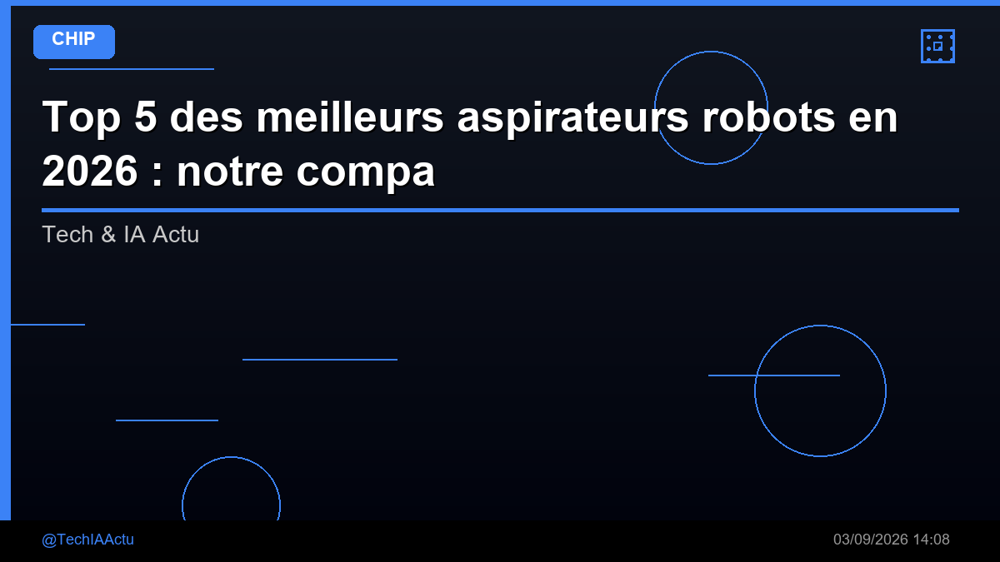

Top 5 des meilleurs aspirateurs robots en 2026 : notre comparatif

🛒 En lien avec cet article
🛒 Voir le prix : aspirateur robot
Publicité — Liens de partenariat Amazon : une commission peut être reversée, sans surcoût pour vous.
🔥 Top produits tech du moment
🛒 Voir le prix : Apple Watch Series 10
🛒 Voir le prix : PlayStation 5
🛒 Voir le prix : Raspberry Pi 5
Publicité — Liens de partenariat Amazon : une commission peut être reversée, sans surcoût pour vous.
Fini la corvée : voici les 5 aspirateurs robots les plus efficaces en 2026, avec ou sans station de vidage.
Notre sélection en bref
- Ecovacs Deebot X5
- Roomba j9+
- Xiaomi Robot Vacuum S20
- aspirateur Dyson V15
- Aspirateur laveur Tineco
1. Ecovacs Deebot X5
✅ Points forts : Lavage + aspiration, station auto
❌ Points faibles : Prix élevé
🛒 Voir le meilleur prix : Ecovacs Deebot X5
2. Roomba j9+
✅ Points forts : Évite les obstacles, station de vidage
❌ Points faibles : Application perfectible
🛒 Voir le meilleur prix : Roomba j9+
3. Xiaomi Robot Vacuum S20
✅ Points forts : Bon rapport qualité-prix, LIDAR
❌ Points faibles : Bac petit
🛒 Voir le meilleur prix : Xiaomi Robot Vacuum S20
4. aspirateur Dyson V15
✅ Points forts : Aspiration surpuissante, laser
❌ Points faibles : Ce n'est pas un robot
🛒 Voir le meilleur prix : aspirateur Dyson V15
5. Aspirateur laveur Tineco
✅ Points forts : Lave + aspire, idéal sols durs
❌ Points faibles : Bruyant
🛒 Voir le meilleur prix : Aspirateur laveur Tineco
Notre verdict
Ecovacs Deebot X5 pour le tout-automatique, Xiaomi S20 pour les petits budgets.
Prix indicatifs constatés au moment de la rédaction, susceptibles de varier. Liens partenaires : une commission peut nous être reversée, sans surcoût pour vous.
🚀 Vous êtes freelance tech ?
Calculez votre TJM en 30 secondes : micro-entreprise, SASU, EURL ou portage salarial. Gratuit, taux 2025.
Calculer mon TJM →Source : Tech & IA Actu